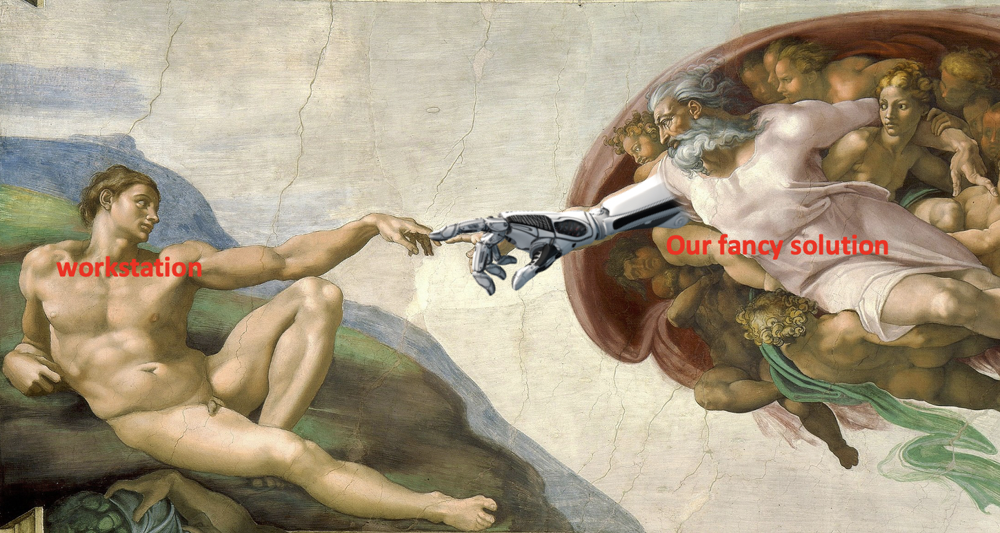
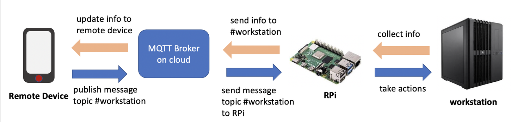
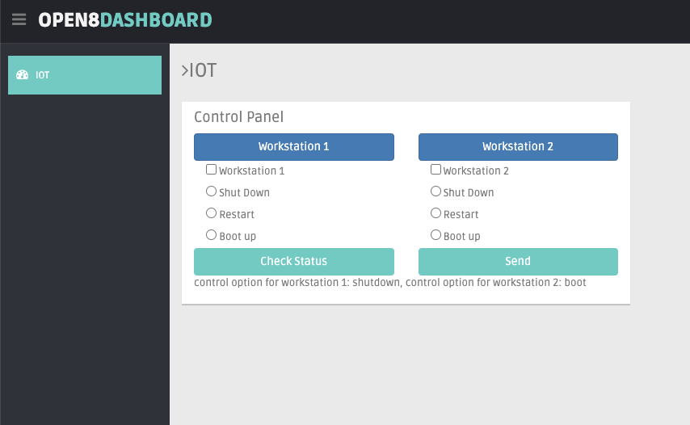
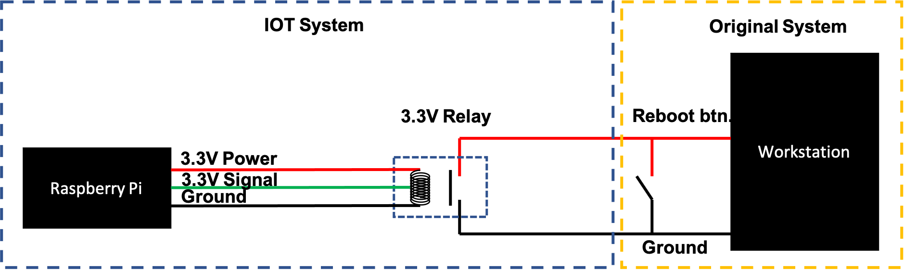

IOT for Workstation Remote Control
Finally, I combined AI & IOT with hardware.
Due to Covid-19, we have to work from home, and as a Machine Learning Engineer, I need to conduct trainings remotely on our workstations. Since so many people need to use it, the workstation is becoming less and less stable and once it shuts down, we need to be physically in front of it, just to press the reboot button.
As a ML & AI engineer with mechatronics background, I refuse to become the slave of our workstation; and thus I decide to implement an IOT system to remote control.
System Overview
How is this even possible?
When I say I want to remote control the workstation, you may wonder: if the system is already down, how can you reboot it remotely? Well, I am not going to remote control it via software, I am going to design the system to press the reboot button. Yes, I really mean press that button.
So are we going to design a robot arm or something moving? No. Robot arm is an overkill and itself takes too much effort to design and maintain. If you decide to use a robot arm as your solution, then you are not a good mechatronics engineer for sure. :)
If we think about it, why we press that reboot/shutdown button, computer will reboot/shutdown? The button there is just a switch and when we press it, the circuit shorts and thus machine can reboot/shutdown. Thus we only need to design a circuit to mimic the action of pressing button, we are able to control the whole system. This solution is simple to implement and easy to maintain. (Because I am professional.)
What we need
What we need is very simple, just a Raspberry Pi, 2 of 3.3V relay and bunch of wires.
{kind=link}
{kind=link}
Then we are about to design our own IOT system.
System graph
We are going to use a broadcasting service called MQTT, one can regard this as a cloud messager. We will send messages from our local device, like PC or iPhone, to the broker, then broker will forward the messages to our Raspberry Pi. Once Raspberry receives message, it will decode the message and generate corresponding voltage and current to activate the circuit we designed to control the workstation. This is the big picture of our IOT system.
Cloud side
Firstly, we need to setup a cloud page for our user to generate control commands. A web page like below is very simple to create in Flask and host on cloud.
Then we just need to send messages from this web page to a topic on broker, for example "workstation_control", and on our Raspberry Pi, we need to subscribe to the topic we created just now so that we can receive messages from cloud. As you can see from below, once we sent the message, Raspberry Pi will immediately receives it and show in the terminal at the bottom.
Now we finished the data pipeline on cloud side, and we move to circuit design.
Circuit design
It's very simple to design the circuit, if you know why your PC will reboot after you press the button. We just need to use the relay as another switch and connect in parallel with the workstation button.
Dry Run & Simulation
When Raspberry Pi receives signal from cloud, it will generate a 3.3V signal and thus the relay, which is an electric-magnetic switch, will be closed and the circuit for workstation will short and thus it reboots. The same principle applies to the shutdown button, the only difference is for shutdown, we need to press 4-5 seconds which can be easily controlled by Raspberry Pi.
For "shutdown", the blue LED will on for 5 seconds, then off, simulating the shutdown action.
For "boot up", the blue LED will on for 1 seconds, then off, simulating the boot action.
For "restart", the green LED will on for 1 seconds, then off, simulating the restart action.
The Deploy
Okay, enough demo, lets just connect all these things into our workstation motherboard and play with the system!
The controller just works as designed and everything looks smooth! YEAH! now we are no more slaves of the workstation and can control it from home!
What's Next
You might already feel, that we can add more advanced functions to this platform. We can soon have face recognition system, voice recognition system, voice awaken system and ... sky is the limit.
Though this project is not big and its function is very specific, I learnt a lot from it and now I am more confident about myself for our intelligent future.